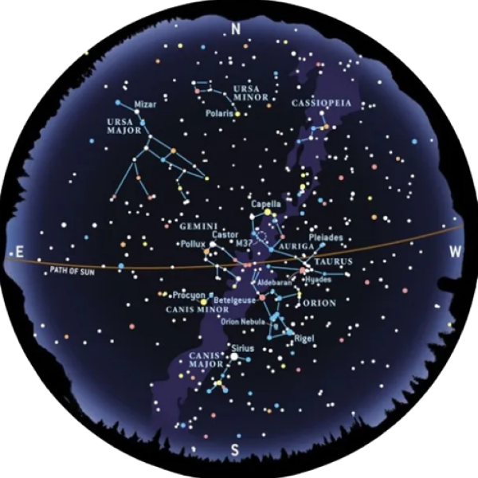

За да видим съзвездията, които идват и си отиват със сезоните, трябва да обърнем гръб на северните
околополюсни съзвездия и да гледаме на юг. Ако зимното небе изглежда оживено със звезди, това не е илюзия.
Освен очевидните факти, че тогава въздухът е чист и сух, ние гледаме към регион, богат на звезди който
определя един от спиралните ръкави на нашата галактика Млечен път. От двадесет и една най-ярки звезди в
цялото нощно небе (така наречените звезди от 1-ва величина), седем са в тази област.
В зимна вечер небето е дом на какво повечето астрономи са съгласни, че е най-великият от всички
съзвездия — Орион Ловеца. Правоъгълник от ярки звезди, което включва противоположно ъгли, Бетелгейзе
и Ригел от 1-ва величина, е разделен на две от диагонален ред от три ярки звезди (“Коланът"). Под
колана виси ред от три звезди - "мечът" на Орион. Не се заблуждавайте от техните невдъхновяващ вид с
просто око; средата звездата в меча изобщо не е звезда. Орион Небула е завладяваща гледка,
наподобяваща мъх петно светлина в бинокъл, където се раждат звезди.

Тази карта показва зимното небе в 02:00 сутринта на 1 декември;
полунощ на 1 януари и 22:00 ч. на 1 февруари.
Орион служи като център на ослепителна група от звезди и съзвездия. Следвайте пояса на Орион, за да намерите
Сириус, най-ярката звезда, водеща Голямото куче. Той блести красиво близо до хоризонта през зимата.
Продължавайки от пояса на Орион, намерете V-образните Хиади, представляващи „главата“ на Бика Телец и
групата Плеяди наблизо.
Най-горният рог на Телец се свързва с Капела в Аурига Колесничаря, разположена над Орион.
Спътниците на Орион включват Близнаците Близнаци, открити чрез удължаване на линия от
Ригел през Бетелгейзе. През 2005 г. Сатурн се присъединява към Близнаци.По средата между Сириус, Полукс и
Кастор ще забележите звездата Процион от първа величина, представляваща Малкото куче, Малкото куче.
Пролетни съзвездия
Докато дните се удължават и времето се затопля, Орион и неговата зимна свита се
придвижват бавно към западното небе. Лъвът Лъв сега заема централно място
високо на юг. Най-забележимата характеристика на Лъва е астеризъм (група от звезди), който напомня на
наблюдателите за сърп или обърнат назад въпросителен знак. Периодът на въпросителния знак е звездата от 1-ва
величина Регул. Отляво на сърпа има три звезди, които образуват правоъгълен триъгълник. Виждаме Лъва
отстрани; сърпът очертава главата му, а триъгълникът - задните части. Погледнат с малко въображение, Лео
определено има котешки профил.
01:00 ч. на 1 март; 23:00 ч. на 1 април; 21:00 ч. на 1 май. Добавете един час за лятното часово
време.
През пролетта Голямата мечка се появява почти над главата от средните
северни ширини. Ако ти следваш Дипър далеч от купа, вие ще „прескочите до Арктур“, златисто-жълто
звезда от 1-ва величина в съзвездието Воловар пастирят. Самото съзвездие е оформено като огромно
хвърчило, с Арктур в основата си. Продължава дъгата, ще „спринтирате до Spica“. Тази синьо-бяло
звезда от 1-ва величина е в Дева, което е огромно, разпръснато съзвездие. Ако погледнете отдолу и на
дясно от Spica, ще забележите спретната малка група от четири ярки звезди, които приличат на
очертанията на платно.
Това е съзвездието Корвус Врана. Винаги съм се впечатлявал колко
величествено изглежда това малко съзвездие,
кацнало над върховете на дърветата на юг на
ясна пролетна вечер.
Летни съзвездия
Лятото е сезон на смесени благословии за астрономите. Нощите са топли, но кратки и често мъгливи. Сякаш това
не е достатъчно лошо, с което трябва да се борим рояци кръвосмучещи комари! Ако оставим настрана мъглата и
насекомите, лятното небе е истинска галерия от космически шедьоври. Млечният път се извива високо напречно
небето, което е по-богато от зимния си аналог, защото сега гледаме към сърцето на нашата галактика.
Доминиращи във вечерното небе са три от 1-ва величина звезди, образуващи летния триъгълник. Вега е
най-ярката от трите и се намира в красиво малко съзвездие, наречено Лира Лирата.
Денеб, втората звезда в летния триъгълник, служи като небесната опашка на Лебеда Лебед, и заедно с
четири други видни звезди на лебедът, колективно композира поразителният астеризъм, известен като
Северния кръст, който е сложно вплетено в ефирния гоблен на Млечния път, с величествено украсен
Денеб върхът на кръста, докато Албирео, известен двойна звезда, украсява основата си със своите
завладяващи нюанси от сияен златистожълт и хипнотизиращ сапфир синьо, забележителен спектакъл, който
изисква сила на телескоп, за да оцените напълно.
01:00 на 1 юни; 23:00 на 1 юли; 21:00 на 1 август. Добавете един час за лятното часово време.
По-на юг по Млечния път е ярката звезда Алтаир и нейното родителско съзвездие, Орела
Орела. Ако следвате Млечния път от Акуила към южния хоризонт, трябва да намерите група звезди, които
приличат на чайник. Този астеризъм е част от Стрелец Стрелец. Това съзвездие маркира местоположението на
центъра на нашата галактика. Районът гъмжи от съкровища на дълбокото небе - особено ярки мъглявини и звездни
купове. Вдясно от чайника е румената звезда от 1-ва величина Антарес, „сърцето“ на Скорпион Скорпионът.
Подобно на зимната звезда Бетелгейзе, Антарес е червен свръхгигант в последните етапи от живота си. Редица
от звезди във формата на рибарска кука надолу и вляво от Антарес образува опашката и жилото на Скорпиона,
докато изправен ред от три звезди отдясно на Антарес маркира местоположението на ноктите му.
Есенни съзвездия
Когато нощите започват да се удължават и хладът прониква във въздуха, летният Млечен път
излиза от централната сцена (въпреки че летният триъгълник остава видим на запад до началото на зимата).
След летния триъгълник е едно от най-красивите съзвездия на нощното небе - делфинът Делфин. Четири звезди,
подредени като диамант оформя главата на делфина, докато една пета създава опашката. Можете да си
представите делфин, изскачащ от водата, докато гледате това съзвездие.
01:00 на 1 септември; 23:00 на 1 октомври; 21:00 на 1 ноември. Добавете един час за
зимно часово време.
След него има доста безплодна небесна шир, чиято най-забележителната
характеристика е Големият площад на Крилатият кон Пегас. Алферац е на върха левия ъгъл на Големия
площад. От тук два реда от звезди, разклонени и нагоре. Това е съзвездието Принцесата Андромеда. И
да, той е дом на велика галактика Андромеда. На разстояние 2,7 милиона светлинни години от Земята,
това е най-отдалеченият обект лесно видими с просто око. През бинокъл, обаче ще видите елипсовидно
сияние (на галактиката светло ядро), което изглежда по-голямо в малко телескопи.
Сега, след като ви запознах с някои от съзвездията, е време да се отправите и да намерите
свои собствени приятели. Обширното нощно небе ще ви стане по-познато, след като прекарате качествено време в
изучаване на „лицата“ на съзвездията. Класът е свободен!